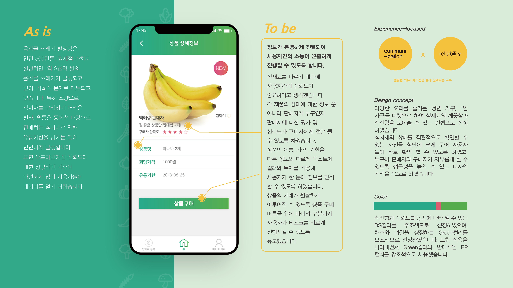
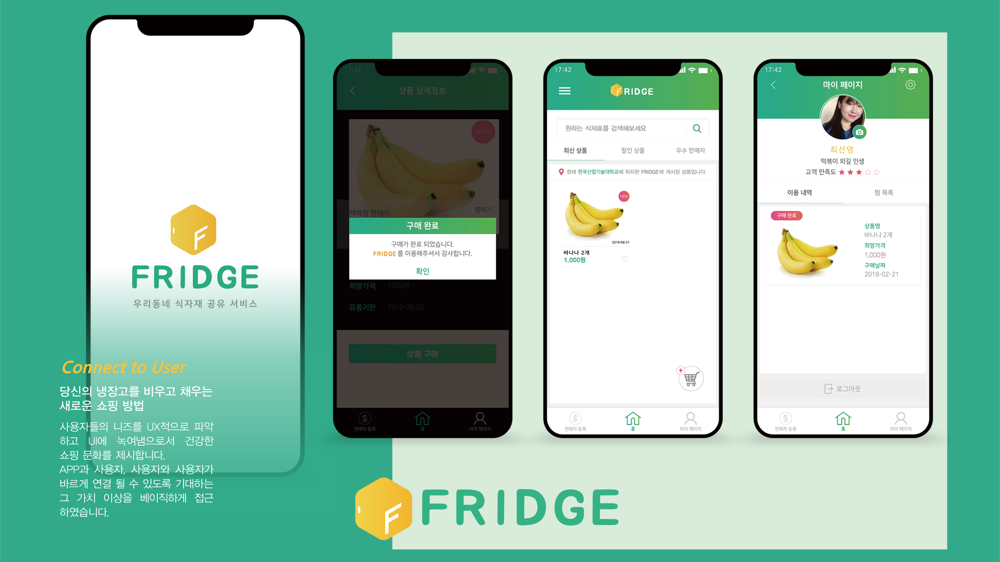
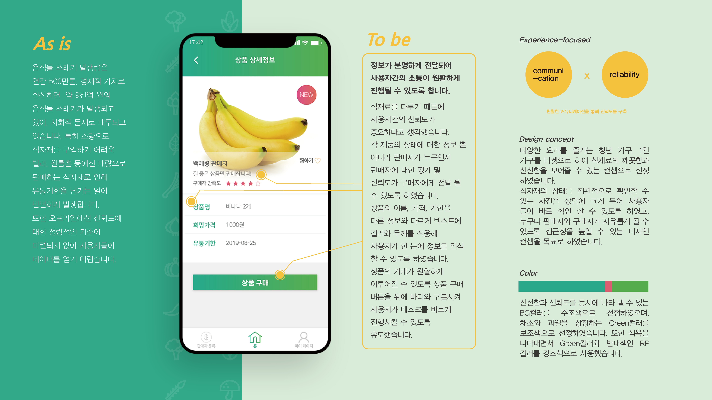
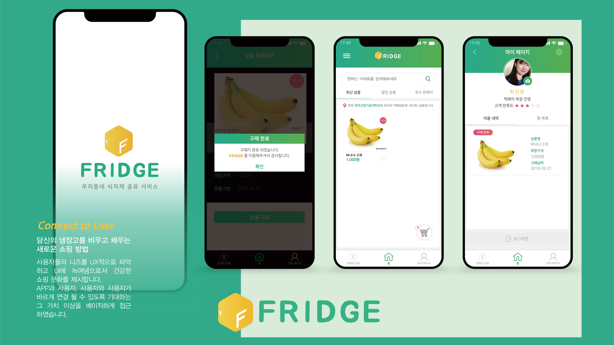
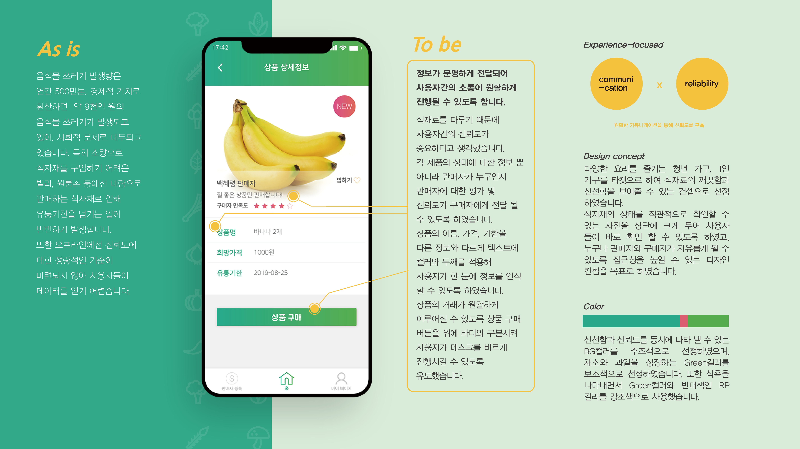
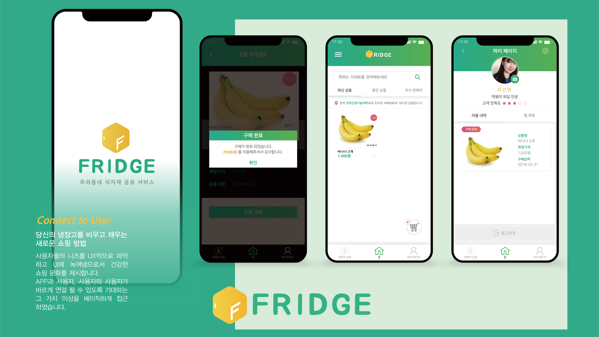

2017. 09 - 2018. 02
FRIDGE는 개인과 개인의 공유 경제시스템, B2B시스템을 기초로 제작되었습니다. 각 지역에 위치 하고있는 공유냉장고를 효율적으로 연결시켜주는 거래 및 커뮤니티 앱 서비스 입니다.
대량판매로 이뤄지고 있는 식자재를 타인과 자율적이고 공정하게 거래할 수 있도록 공간을 제공 합니다.
원하는 식자재, 판매자를 검색할 수 있고 후기와 별점을 통해 체계적으로 관리될 수 있습니다.
fridge는 정보가 분명하게 전달되어 사용자간의 소통이 원활하게 진행될 수 있도록 합니다.식재료를 다루기 때문에 사용자간의 신뢰도가 중요하다고 생각했습니다.
각 제품의 상태에 대한 정보 뿐 아니라 판매자가 누구인지 판매자에 대한 평가 및 신뢰도가 구매자에게 전달 될 수 있도록 하였습니다.

